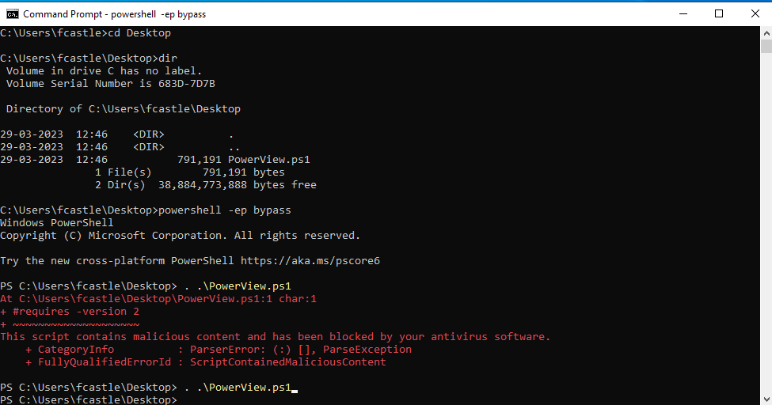

Make txt file of .ps1 type with name PowerView and save the raw data.
https://raw.githubusercontent.com/PowerShellEmpire/PowerTools/master/PowerView/powerview.ps1
https://gist.github.com/HarmJ0y/184f9822b195c52dd50c379ed3117993
I have started the Windows Server and the Windows 10 pc (i.e. Frank Castle aka the punisher which is the compromised PC)
Start a CMD and change the directory where u have saved the powerview file (i.e. Desktop in my case)
Command : powershell -ep bypass
where ep stands for execution policy
Due to antivirus the script was not able to execute.

Command : Get-NetDomain
Command : Get-NetDomainController

Command : Get-DomainPolicy

Command : Get-NetUser

As we can see the output get's dirty as we get dumped with so much of information. This is another way to get the password that was being stored in the discription (i.e. mitm6)
Command : Get-NetUser | select cn

Command : Get-NetUser | select samaccountname

From the above command we can observe that
When was the last time the user logined in ?_?
How many bad password count they have ?_?
What is their useraccountcontrol (i.e. the RID number 500 for administrator) ?_?
Command : Get-UserProperty -Properties logoncount

As the usage of Get-UserProperty is deprecatedwe have to either use
Get-DomainUser -properties name, pwdlastset, badpwdcount
Get-NetUser -properties name, pwdlastset, badpwdcount

Command : Get-NetComputer
will list out all the computers in the domain.

But we want for information as we can see that we have only names of the computer in the above SS.

Command: Get-NetComputer -FullData | select OperatingSystem
remember that here the select is working just like "Grep" command

Command : Get-NetGroup

Command : Get-NetGroup -GroupName *admin*

Command: Get-NetGroupMember -GroupName "Domain Admins"

How to find all the SMB shares ?_?

How to see the Group Policy ?_?
Command : Get-NetGPO

Command : Get-NetGPO | select displayname , whenchanged